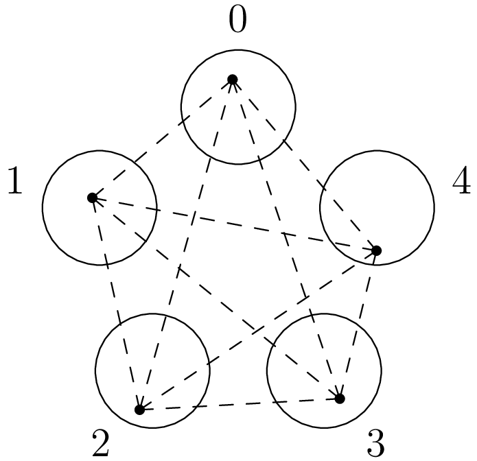

March 4th
Today I learned some examples of $p$-adic geometry being horrible, from this undergraduate paper . For example, we have the following.
Proposition. No three distinct points in $\QQ_p$ are collinear.
The meaning of "collinear'' is unclear here because $\QQ_p$ doesn't have a clear geometry, but we will take lines as geodesics. That is, if $a,b,c\in\QQ_p$ all lie on the same line with (say) $b$ between $a$ and $c,$ then the shortest path between $a$ and $c$ goes through $b.$ Do we must have\[|a-c|_p=|a-b|_p+|b-c|_p\]by following the path through $b.$ This is not a totally rigorous argument, but it will serve fine as a definition for collinear. Anyways, it's not hard to see there are no three distinct $a,b,c\in\QQ_p$ satisfying this by the ultrametric inequality. Indeed, we have\[|a-c|_p\le\max\{|a-b|_p,|b-c|_p\} \lt |a-b|_p+|b-c|_p=|a-c|_p,\]which is our contradiction. In particular, we have a $ \lt $ because $a,b,c$ are distinct, implying all distances are positive. $\blacksquare$
Visually, I see the above proposition as a geometric way to view "totally disconnected.'' As in, we do have a metric and notion of distance, but this distance is quite discrete in $\QQ_p$ and gives very separated space. Lines would require some connections between points, which doesn't exist in $\QQ_p.$ We also remark that the above proof works for any ultrametric space.
However, I find the following more interesting with respect to $\QQ_p$'s geometry.
Proposition. At most $p$ distinct points in $\QQ_p$ are equidistant.
We note that equality is possible: choose points in each coset $\ZZ_p/p\ZZ_p,$ and then each will differ by some element in $\ZZ_p\setminus p\ZZ_p,$ making each point a distance $1$ from each other point. Here's a picture in $\ZZ_5.$
This equality case actually tells us where to look: if there are more than $p$ elements, we should try to force two elements into some small coset. In fact, we will manipulate our sequence to fit nicely into $\ZZ_p/p\ZZ_p.$
Suppose we have $n$ points $a_0,\ldots,a_{n-1}\in\QQ_p.$ To make things easier to handle, we note that\[|a-b|_p=|(a-c)-(b-c)|_p,\]so shifting all points by some constant $c$ will not change being equidistant. So we subtract $a_0$ from all points and relabel our sequence to $0,a_1,\ldots,a_{n-1}.$
We would like to force our nonzero points in $\ZZ_p\setminus p\ZZ_p,$ so we write $a_\bullet=b_\bullet p^{\nu_\bullet}$ with $b_\bullet\in\ZZ_p\setminus p\ZZ_p$ for $\bullet \gt 0.$ We want to get rid of the $p^{\nu_\bullet},$ so we fix let $\nu$ be the minimum of the $\nu_\bullet$s and get ready to divide by $p^\nu.$ Namely, we see\[|c|_p\cdot|a-b|_p=|ac-bc|_p,\]so multiplying all points by some constant $c$ will not change being equidistant either. Thus, we reorder our sequence to put $\nu_1=\nu$ and then multiply through by $p^{-\nu}.$ Relabeling our sequence, we now have $0,a_1,\ldots,a_{n-1}$ where $a_1\in\ZZ_p\setminus p\ZZ_p$ and each $a_\bullet\in\ZZ_p$ for each $\bullet \gt 0.$
Now we finish. Note that $|a_1-0|_p=1$ because $a_1\in\ZZ_p\setminus p\ZZ_p,$ implying that all points must be a distance of $1$ from each other because they're equidistant. In other words, for any two points $a_k$ and $a_\ell,$ we must have $\nu_p(a_k-a_\ell)=0,$ or\[a_k-a_\ell\not\in p\ZZ_p.\]However, this forces all $n$ points to be in different cosets of $\ZZ_p/p\ZZ_p,$ of which there are only $p.$ Thus, the pigeonhole principle forces $n\le p,$ and we are done. $\blacksquare$
The proposition is written as an "at most'' statement, but I find it remarkable that the equality case exists at all. The fact that we can embed the complete graph $K_p$ in $\QQ_p$ (and with ease!) makes its geometry feel super weird. For comparison, $\RR$ can only do $2,$ and $\CC$ can only do $3$; and typically, I think this many equidistant points is visualized as a $p$-simplex in $\RR^p,$ which $\QQ_p$ feels very different from.